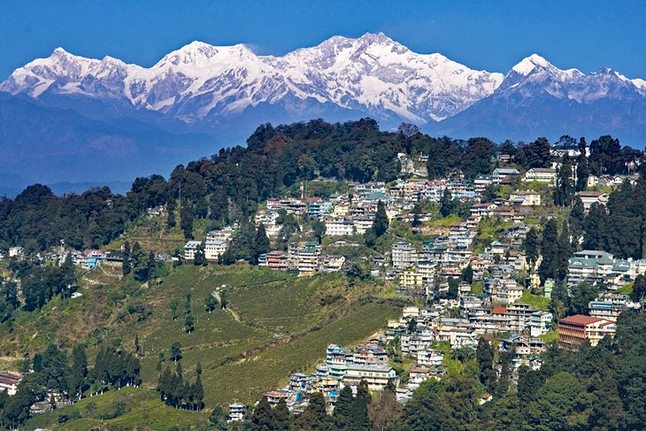
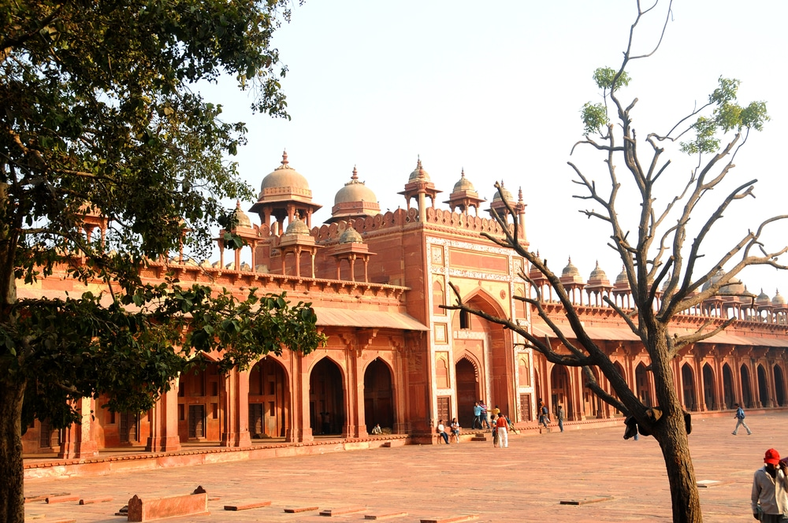
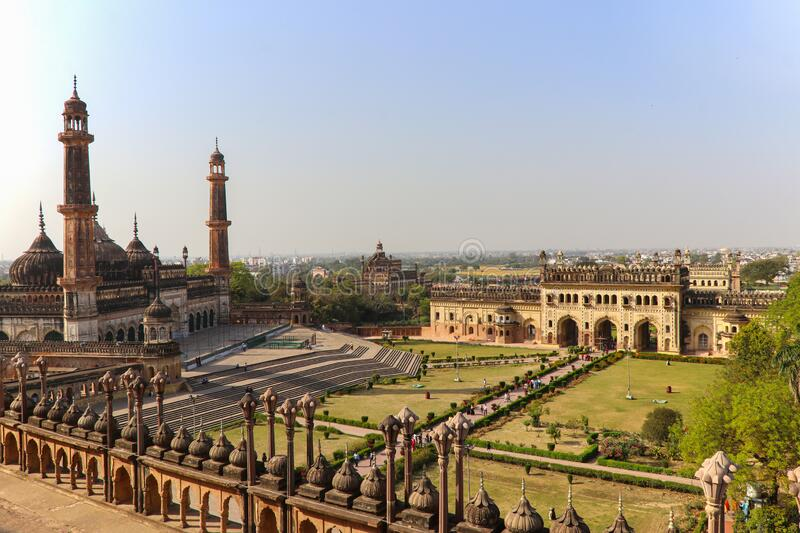
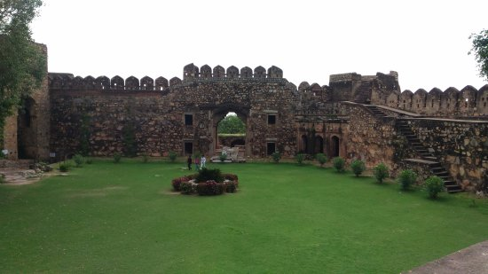

If there was just one symbol to represent all of India,
it would be the Taj Mahal. The monument inspires millions of tourists to make
the trip to Agra every year, waking up before dawn to see magnificent structure
radiate at sunrise. But Agra tops the list of the best places to visit in India for
reasons that go beyond India's most famous attraction.

Darjeeling
One of the most popular things to do in Darjeeling is taking a ride on the
Darjeeling Himalayan Railway. Powered by an antique steam locomotive,
the 140-year-old "Toy Train" takes tourists on two-hour fun rides from Darjeeling
to Ghum—a journey that's regularly counted as one of the most scenic train
rides in the world.

Fatehpur Sikir
Fatehpur Sikri, the 16th century city, was built by the renowned Mughal emperor
Akbar. Though the city was at its glorious height only for a short period owing to scarcity
of water, its breathtaking architecture makes the city eternally famous. The palaces found here reflect
the architectural brilliance of the bygone era. Here are some top spots that need to be visited on your
tour to Fatehpur Sikri.
Delhi Fort
The Red Fort Complex was built as the palace fort of Shahjahanabad the new capital of the fifth
Mughal Emperor of India, Shah Jahan. Named for its massive enclosing walls of
red sandstone, it is adjacent to an older fort, the Salimgarh, built by Islam Shah Suri
in 1546, with which it forms the Red Fort Complex.
Virdhavan
Vrindavan Chandrodaya Mandir is the most expensively built temples
in India and world’s tallest temple. The temple is under construction at
Vrindavan, spread over a sprawling 26 acres.

Lucknow
Lucknow, the capital of Uttar Pradesh was historically known as the Awadh
region. Today, it is the administrative headquarters of Lucknow District and
Lucknow Division. Fondly known as the 'City of Nawabs' or the 'City of Tehzeeb',
it has always been a city filled with varied cultures.

Jhansi
Jhansi city, situated between the rivers Pahunj and Betwa is a symbol of bravery, courage
and self respect. It is said that in ancient times Jhansi was a part of the regions Chedi
Rashtra, Jejak Bhukit, Jajhoti and Bundelkhand. Jhansi was a stronghold of the Chandela kings.
Balwant Nagar was the name of this place.
Kanpur
Nestled on the banks of the Ganges river, Kanpur is a beautiful city in its own right,
brimming with religious and historical sites. Kanpur Gardens, Allen Forest Zoo, Shri
Radhakrishna temple, Kanpur Memorial Church, Kamla Retreat, Moti Jheel (reservoir),
JK temple and Jajmau (one of the largest tanneries in India) are some of the must-visit spots.